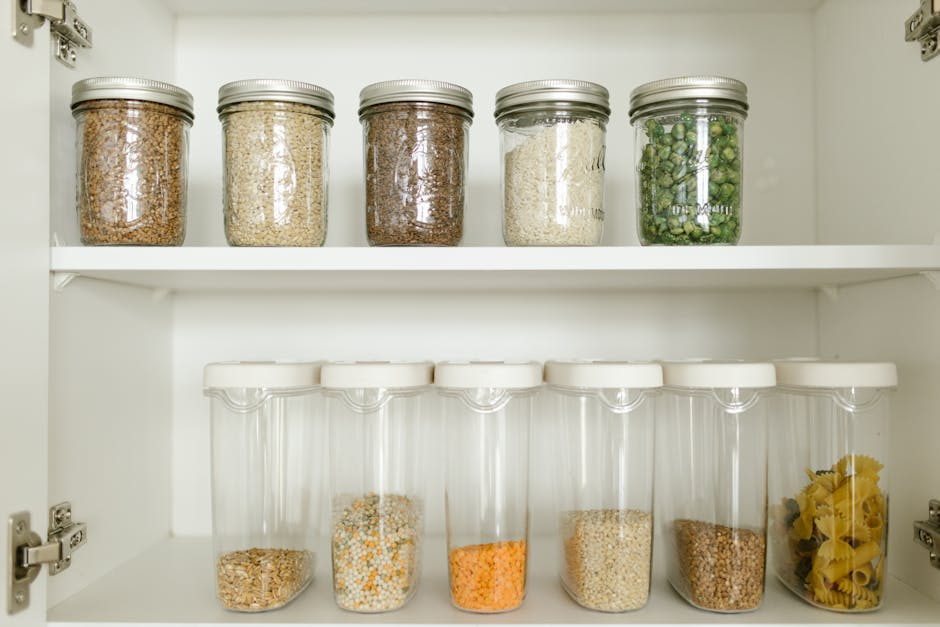
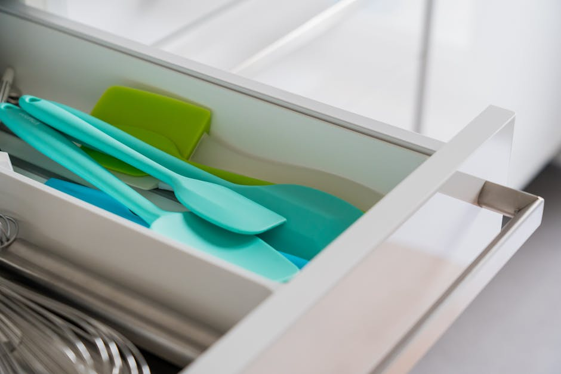
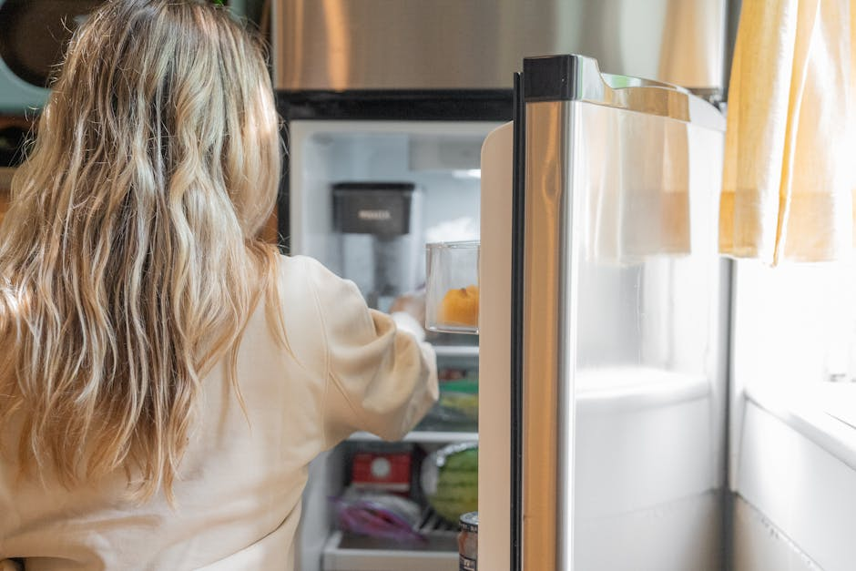

This post contains affiliate links. If you buy something through my links, I may earn a small commission at no extra cost to you — I only share things I'd genuinely recommend to a friend.
I used to dread opening my kitchen cabinets. Not because things were broken or dirty, but because the chaos was just exhausting to look at every single day. I'd shove the pantry door shut fast after grabbing something, avoid making eye contact with the fridge shelf, and call it a day. Then I went a little deep on kitchen storage solutions and spent a few months actually testing things — and a few of them were so good I'm still thinking about the before-and-after.
Here's what made the cut. These aren't aspirational purchases that look good on a shelf and collect dust — they're the five things I use daily that make my kitchen feel like it belongs to someone who has their life together.

The Pantry Glow-Up Starter Pack: Clear Airtight Container Set
I'll be honest — I was skeptical. Decanting pasta and rice and oats into matching containers felt like something I'd do once and then abandon. That is not what happened. Once I did it, I genuinely could not believe I'd been living the other way. Seeing everything at once, in uniform containers, with labels? It changed how I cook. I stop forgetting I have things. I stop buying duplicates. My pantry went from a vague embarrassment to the thing I show people when they come over.
These airtight containers keep dry goods fresh significantly longer than a half-open bag clipped shut with a clothespin (we've all been there). The clear walls mean you can see at a glance when you're running low on quinoa or oats without digging around. And the lids actually seal — you can hear and feel the click. They stack cleanly too, which means vertical pantry space finally gets used the way it should.
If you only buy one thing from this list, this is the one. It has the biggest visual impact and the most immediate payoff in your day-to-day kitchen life. The only caveat: it takes about 45 minutes to decant everything the first time, and you will need to label them or you will absolutely mistake salt for sugar.
- The airtight seal genuinely keeps food fresher — no more stale cereal by week two
- Uniform sizing and clear walls make pantry organization feel effortless to maintain
- Stackable design reclaims vertical shelf space you didn't know you had
- Makes it easy to see what you're running low on before you're completely out
The Drawer That No Longer Haunts Me: Bamboo Drawer Organizer
Every home has a junk drawer. Mine had two. The bamboo drawer organizer didn't eliminate the chaos entirely — I'm still me — but it gave everything a place, and that small shift changed a lot. The compartments are sized well for spatulas, peelers, and the random things that accumulate in a kitchen drawer (chip clips, rubber bands, a mystery battery). And the bamboo aesthetic is genuinely beautiful — it doesn't look like a utilitarian office supply, it looks like something you chose on purpose.
What I didn't expect was how much easier cooking became. When every utensil has a home and you can see them all at a glance, meal prep is just... less friction. You stop rooting around. You stop finding your can opener in the wrong spot. The bamboo is smooth and easy to wipe down, which matters more than you'd think when olive oil gets on everything.
One honest note: measure your drawers first. The organizer fits most standard kitchen drawers well, but if you have a narrow or unusually shaped drawer, double-check the dimensions before ordering.
- Natural bamboo looks intentional and warm — not plasticky or cheap
- Multiple compartment sizes accommodate everything from tiny spoons to large serving utensils
- Easy to wipe clean and doesn't absorb odors like some fabric organizers do
- Brings a calm, decluttered feel to the drawer you open 20 times a day

The Corner Cabinet Solution I Should Have Found Years Ago: Lazy Susan Turntable
Corner cabinets are where things go to disappear. Olive oil from 2021, a bottle of fish sauce you used once, three different kinds of vinegar — all slowly migrating to the unreachable back. A lazy Susan turntable is such a simple fix that I felt slightly embarrassed it took me this long. You spin it, everything comes to you, nothing gets lost in the back. That's genuinely the whole pitch and it works every single time.
I also started using one inside my fridge on the condiment shelf, and that was an even bigger revelation. No more pulling out six things to reach the hot sauce behind them. One spin and you can see everything you have. The turntable has a slight lip to keep bottles from sliding off when you spin it, which is the detail that separates a good one from an annoying one.
This one is also great for under-sink cabinet organization if you want to corral cleaning products. Versatile in a way most kitchen storage items just aren't.
- Transforms dead corner cabinet space into genuinely usable storage
- Works beautifully inside the fridge for condiments and small jars
- Low lip prevents bottles from tipping when you spin it
- Saves time every single day — no more excavating to find what you need
Making Your Pantry Door Work For Once: Over-Door Pantry Organizer
The back of a pantry door is some of the most overlooked real estate in a kitchen. I had nothing on mine for years. Now it holds every spice I own, plus a few small jars, a roll of foil, and some things I used to keep in an overcrowded drawer. The over-door pantry organizer hooks right over the door without any drilling, and the weight distribution is solid — it doesn't swing or rattle when the door opens and closes.
This one is particularly great if your kitchen storage is limited overall. Apartments and smaller homes often have fewer cabinets than you'd want, and using vertical door space is one of the smartest ways to declutter the shelves you do have. I moved my entire spice collection here and suddenly had a full cabinet shelf free for something else. That felt genuinely significant.
Worth knowing: some over-door organizers are flimsy, but this one has held up well with real weight on it. The pockets are clear so you can see what's in each one, which is important — an opaque over-door organizer just trades one kind of chaos for another.
- Uses dead door space without any drilling or hardware installation
- Clear pockets mean you can actually find things instead of guessing
- Frees up significant shelf and drawer space by moving spices and small items off cabinets
- Sturdy enough to hold real weight without sagging or tilting

The Fridge Transformation That Made Me Want to Cook More: Clear Fridge Organizer Bins
I didn't know how much fridge chaos was affecting my mood until I fixed it. Opening my fridge used to feel like a small, stupid stressor — nothing visible, things falling over, mystery containers in the back. After adding stackable clear fridge organizer bins, something actually shifted. Everything has a zone. Produce in one bin, deli items in another, snacks in a third. When you open the door, you can see everything at a glance. It sounds small. It is not small.
The stackable design is what makes these work for fridge organization specifically — you're working with limited height and depth, and being able to stack neatly means you double your usable space without losing visibility. The bins pull out like little drawers, so nothing gets abandoned in the back anymore. I've also started using them in the pantry for snacks and packets, and they're just as good there.
These also make grocery unpacking faster because you have a clear system — leftovers go here, fruit goes there. When everything has a home, it actually stays put. The minor downside is that you'll want to measure your fridge shelves first, since bin sizing can vary and you want a clean fit.
- Stackable and clear — maximizes fridge space without sacrificing visibility
- Pulls out like a drawer so nothing disappears in the back ever again
- Works in the pantry and on shelves too, not just the fridge
- Makes grocery unpacking faster because you know exactly where things go
Where to Start If You're Overwhelmed
If you're staring at your kitchen right now feeling like it would take a weekend and a small miracle to sort it out — start with one thing. Honestly, just one. The pantry containers have the biggest visual payoff and make the most immediate difference in how a kitchen feels day-to-day, so if I had to pick a single starting point, I'd go there first.
But any of these will earn their spot. None of them are precious or fussy — they all do real work in a real kitchen and hold up over time. That's the bar I hold everything to before I mention it here, and these five cleared it easily.
If you want to grab everything in one go, the Clear Pantry Container Set on Amazon is where I'd start — and go from there when you're ready. Your future self who opens the pantry tomorrow morning will appreciate it.